Мы берем на себя много, потому что мало чего боимся
Мы берем на себя много, потому что мало чего боимся
В 1930-е годы прошлого века физик Джордж Гамоу из университета штата Колорадо начал публиковать
Он регулярно посещал вечерние лекции местного профессора и, разумеется, всегда засыпал на самом интересном месте. А когда просыпался, то обнаруживал себя в каком-нибудь параллельном мире, где один из основных законов физики действовал не так, как в его мире.